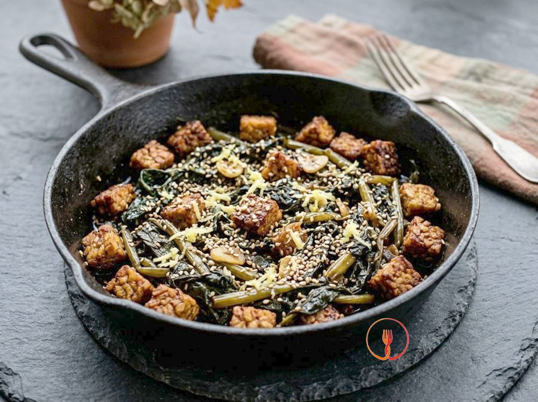

Balsamic braised chicory and crispy ginger tempeh
A protein-rich vegan main course using a braising technique to soften the chicory fibres, enhanced with oriental notes.
A fusion dish combining the bitter note of braised chicory with the umami savoriness of crispy tempeh. Balsamic vinegar and fresh ginger create an irresistible sweet-and-sour and aromatic contrast. A quick and modern preparation, full of diverse textures.
Ingredients
- Catalan chicory800g
- Plain tempeh300g
- Balsamic vinegar of Modena3 tbsp
- Soy sauce (tamari)2 tbsp
- Grated fresh ginger1 tsp
- Garlic1 clove
- Toasted sesame seeds1 tbsp
- Sunflower oil3 tbsp
Allergens
Sesame, Soy, Sulphites
Method
- Begin by thoroughly washing 800g of Catalogna chicory under cold running water, removing any soil residue from the leaves and bases. Cut the vegetable into segments of about 5 centimetres, ensuring you keep the tender inner ribs which will provide a pleasant crunch to the dish. Dry the pieces well with a clean tea towel or a salad spinner to prevent excess water from ruining the subsequent searing. The result should be clean, dry chicory, ready to be transformed into a flavourful side dish. Chef's tip: Ensure the pieces are uniform in size to guarantee even cooking throughout the vegetable.
- Take 300g of plain tempeh and place it on a stable chopping board to proceed with the cutting. Slice the block into small, uniform cubes, about 1 centimetre per side, using a sharp chef's knife to avoid crumbling it. This task requires precision because equal-sized cubes will cook at the same rate and become evenly crispy. You should end up with compact little dice, ready for the pan. Chef's tip: If the tempeh feels too damp, pat it dry with kitchen paper before cutting; a dry surface promotes the Maillard reaction and the formation of a perfect crust.
- In a large frying pan or a heavy-based wok, pour 3 tablespoons of sunflower oil and heat it over a medium flame. Add the slightly crushed garlic clove (either unpeeled or peeled as you prefer) and 1 teaspoon of freshly and finely grated ginger. Let them sizzle gently for about a minute until an intense, aromatic scent is released, but be careful not to let the garlic brown too much. The oil will absorb all the aromas needed to give character and depth to the final dish. Chef's tip: Remove the inner germ of the garlic for a milder flavour and better digestibility.
- Increase the heat to high and toss the prepared tempeh cubes into the pan. Sauté the tempeh for about 4-6 minutes, moving the pan with a fluid wrist motion or using a spatula so that every side becomes golden and crispy. You want to achieve an inviting, browned surface while keeping the inside of the cube slightly tender. The toasted aroma combined with the freshness of the ginger should fill your kitchen. Chef's tip: Do not overcrowd the pan; if necessary, cook the tempeh in two batches to prevent the oil temperature from dropping, which would make the tempeh soggy instead of crunchy.
- Once the tempeh has reached the desired crispness, remove it from the pan using a slotted spoon to leave the cooking juices and flavoured oil inside. Transfer the cubes to a bowl or a plate kept warm to preserve their temperature and texture during the next steps. This separation is vital to prevent the tempeh from becoming moist and losing its fragrance while the chicory cooks. The cubes should remain dry, well-separated, and fragrant. Chef's tip: Rest the tempeh on a piece of kitchen paper to remove any excess oil and keep it crunchy for longer.
- In the same hot pan, add 800g of chicory and cover immediately with a tight-fitting lid. Cook over a medium heat for about 5 minutes, allowing the residual heat and the vegetable's natural steam to wilt the leaves and slightly soften the ribs. If you notice the vegetable starting to stick to the bottom, add just one tablespoon of water to encourage the necessary steam. The chicory should reduce in volume, becoming tender while maintaining a vibrant green colour. Chef's tip: Do not add salt at this stage, as the soy sauce we will use shortly is already very salty and you would risk over-seasoning.
- Remove the lid and pour 3 tablespoons of Balsamic Vinegar of Modena and 2 tablespoons of soy sauce (tamari) over the chicory. Turn the heat up to maximum and continue cooking for another 3-4 minutes, stirring frequently with a wooden spoon to evaporate the liquid. The liquid must gradually reduce until it turns into a dark, thick, and glossy glaze that completely coats every segment of the vegetable. You should smell the sweet-and-sour aroma of the balsamic blending harmoniously with the saltiness of the soy. Chef's tip: Scrape the bottom of the pan well with the wooden spoon to recover the caramelised tempeh juices, which will add incredible umami to the glaze.
- Once the chicory is perfectly braised and glossy, return the crispy tempeh cubes to the pan. Sauté everything over a high heat for just one minute, stirring gently to meld the flavours and heat the ingredients through without ruining the textures. The final result should be a harmonious mix of bold flavours, with the melting chicory contrasting against the firm tempeh. This step serves to create a gustatory link between the vegetable and protein components. Chef's tip: This step must be lightning-fast; staying too long in the pan would cause the tempeh to absorb the chicory's moisture, compromising the play of textures.
- Turn off the heat and arrange the preparation on serving plates, distributing both the braised chicory and the tempeh cubes equally. Sprinkle each portion with 1 tablespoon of toasted sesame seeds to add a final toasted aromatic note and an elegant visual touch. The dish should look glossy, smelling of ginger and balsamic, with the sesame seeds standing out against the dark glaze. Serve immediately while the contrast of textures is at its peak. Chef's tip: If you have an extra minute, toast the sesame seeds in a dry pan for a few seconds before using them; the heat will release their essential oils, making them much more aromatic.
Tips
- Dry the tempeh well after cutting to achieve a perfectly crispy outer crust.
- Grate the ginger fresh to release all its aromatic power and freshness.
- Cook the chicory over high heat for a few minutes so it remains vibrant and not too soft.
Variations
- Use toasted sunflower seeds instead of sesame for a more pronounced nutty note.
- Deglaze with lime juice instead of balsamic for an even more citrusy and sharp touch.
Nutrition facts (estimate)
| Per serving (215 g) | Per 100 g | |
|---|---|---|
| Energy | 1284 kJ / 307 kcal | 598 kJ / 143 kcal |
| Protein | 20 g | 9.1 g |
| Carbohydrates | 9.0 g | 4.2 g |
| of which sugars | 1.8 g | 0.8 g |
| Fat | 20 g | 9.3 g |
| of which saturates | 5.0 g | 2.3 g |
| Fibre | 7.5 g | 3.5 g |
| Salt | 1.1 g | 0.5 g |
AI estimates based on average CREA / USDA data: indicative only, not a substitute for medical or dietitian advice.
Open the recipe in the app for the shopping list, ingredient sheets and nearby shops.